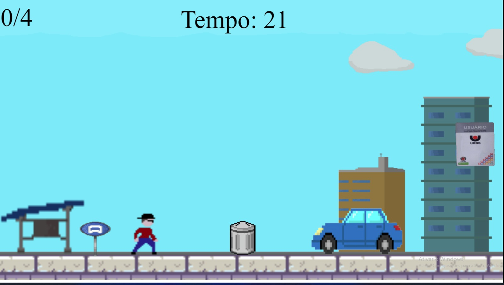
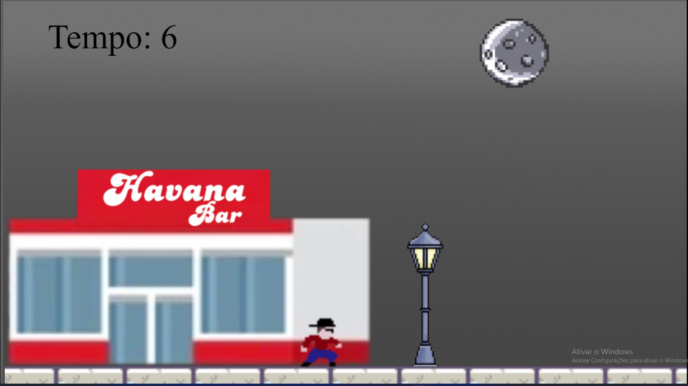
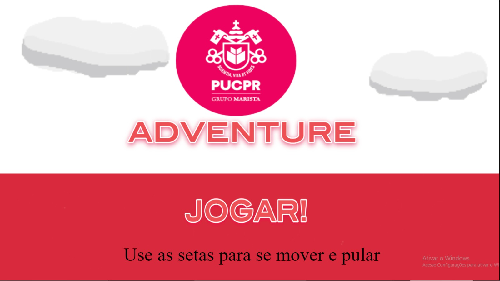
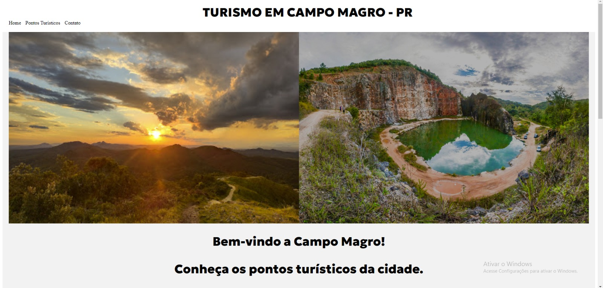

Experiência Criativa: Navegando na Computação
Matéria responsavel pela criação de projeto de diferentes setores.
Jogo
Foi criado um jogo no construct a partir do que foi ensinado em sala, o objetivo do jogo criado em grupo era coletar os itens que apareciam no percurso e chegar ao final antes que o tempo se esgotasse.
  
Aplicativo multimídia
Foi criado um aplicativo multimídia feito com o que ensinado em sala na linguagem Java, que com a interação do usuario com um botão, seria reproduzido o áudio de um meme, o qual era indicado com uma imagem e seu nome, assim sendo possível ser reproduzido o que o usuário queria.
Aplicativo Web
Foi criado um web site de turismo, que visava informar acessos de pontos turisticos de uma respectiva cidade. Foi utilizado em sua criação as linguagens HTML e CSS.
